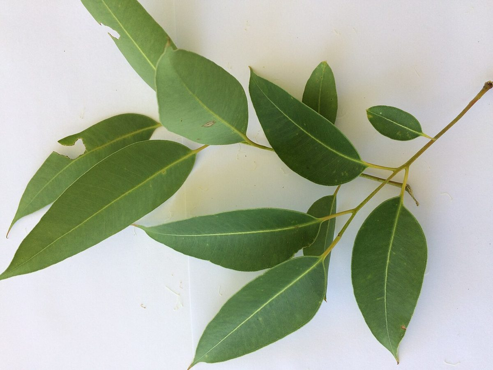
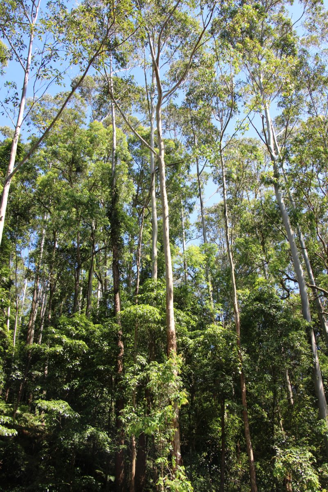

cafeユーカリ
制作側の連想
丸い葉から、鎌の葉へ
制作側は、屋号の「ユーカリ」から植物のユーカリを連想しました。ユーカリには、若い枝では丸い葉、育つと細長く曲がった葉をつけるものが多いとされます。そこでこのサイトは、丸から鎌へとかたちが変わっていく様子を、ページの形に取り入れています(上のメニューの印も、左から右へ少しずつ細くなります)。制作側の連想で、お店の理念・由来とは無関係です。お店が植物のユーカリを意図しているかどうかも分かりません。
- まる
- たまご
- とがる
- ほそい
- かま
一
まるい葉
丸い葉が向かい合ってつく若い枝のイメージ。写真は国外または撮影地不明のフリー素材で、お店の植栽ではありません。
二
かわりめ

先がとがりはじめた葉。丸から細長いかたちへ向かう途中を、イメージとして選びました。
三
かまの葉
細く曲がった葉と、まっすぐ伸びる木々のイメージ。

幹のはだ
はがれて、まだらに。
樹皮がはがれて模様になる種類もあるとされます。写真は国外のイメージです。
ご案内
お店のこと(確認できたものだけ)
| 所在地 | 〒986-0314 宮城県石巻市桃生町寺崎松木畑５２ |
|---|---|
| 電話 | 090-4040-3842 |
| 営業時間 | 準備中 |
| 定休日 | 準備中 |
| ご予約 | 準備中 |
| 駐車場 | 準備中 |
| SNS | Instagram @cafe_eucalyptus22 |